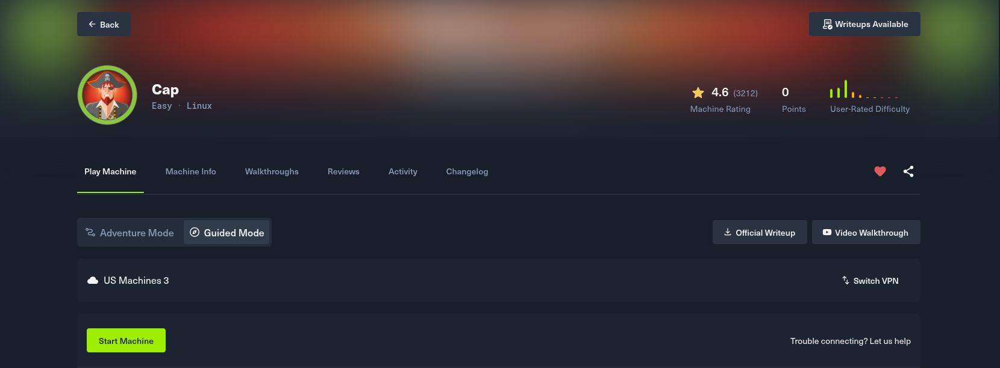

> Installing ArchLinux + hyprland
The main goal of this guide is trying to solve the cap HTB machine, we are going to use opevpn and tshark to look for a password and user in the 0.pcap file

Sections loaded:
Download and Connecting to your vpn
We have to download the 'US Machines 3' vpn, click on the following section
Then we have to install openvpn (if you do not have it)
terminal
# Because I am in Archlinux I am going to use pacman, but if you are not using Archlinux, search the way to install openvpn for your distribution
sudo pacman -S openvpn
Then use openvpn to connect to your HTB vpn by executing the following command
terminal
sudo openvpn us_machines.ovpn
Then use openvpn to connect to your HTB vpn by executing the following command
terminal
sudo openvpn us_machines.ovpn